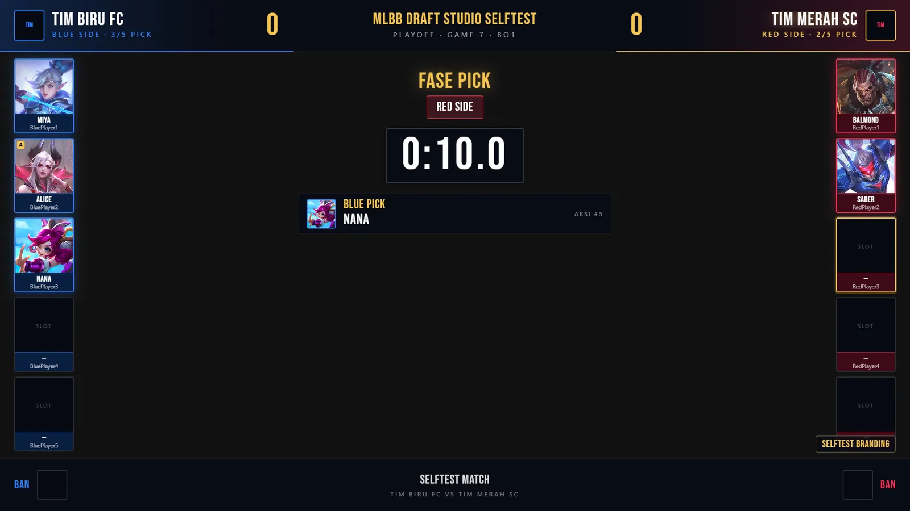

MLBB Draft Studio
Full-stack developerMasalah Operator turnamen membutuhkan satu sumber kebenaran untuk aksi draft, timer, konfigurasi tim, state pertandingan, dan overlay siap siar.
StackReact 18 · Vite · Tailwind CSS v4 · Express · Socket.IO
DibangunPanel operator dan dua overlay OBS Browser Source — draft serta scoreboard
transparan 1920×1080 — dengan timer otoritatif, preset, dan backup state.
TeknisState otoritatif di server via Socket.IO tanpa reload; penulisan atomik (.tmp
lalu rename) dengan autosave dan retensi backup; engine draft terpisah dari
UI.
HasilDirancang sebagai sumber siaran OBS dua PC lewat LAN (operator + siaran).
Pengujian otomatis: 131 asersi backend dan 115 asersi E2E lulus; dataset 133
hero tervalidasi 0 error — fixture teruji, koneksi grid live belum
terverifikasi.